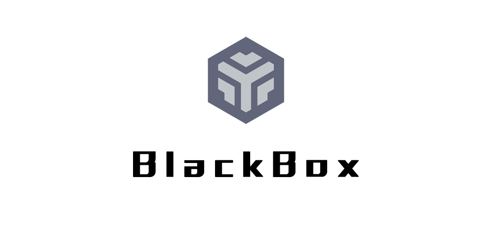
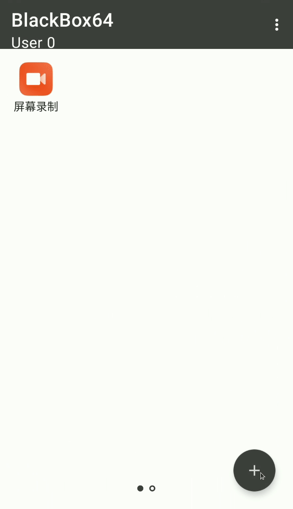

Blackbox 深度拆解：为什么一个免 Root 的安卓虚拟化引擎能跑 Xposed
从 Bcore 引擎架构到 Pine Hook 注入链路，拆解 Blackbox 如何在不触碰系统分区的前提下完成应用克隆、环境隔离与 Xposed 模块加载，并分析这套设计的能力边界与兼容代价。
我第一次见到 Blackbox 是在一个小众论坛的帖子里，标题写着「免 Root 跑 Xposed」。当时的第一反应是又一个营销噱头——传统 Xposed 框架需要修改 /system 分区，而任何不碰系统分区的方案，都意味着它的作用范围不可能覆盖整机。但接下来去它的官网转了一圈再看，Blackbox 的设计思路其实非常聪明，它从一开始就没打算做「另一个 Xposed」，而是选择了一条截然不同的路径：把框架关进笼子里。
问题：为什么一个「封闭」的方案反而成了优势？
大多数人听到虚拟引擎这个词，第一反应是「应用双开」。但如果你稍微往技术底层挖一点，就会发现应用双开只是这个技术栈最表层的一个应用场景。Blackbox 的真正价值，在于它提供了一个进程级别的沙箱环境——在这个沙箱里，它可以做几乎任何事，而沙箱之外的系统分区毫发无损。
这个设计选择带来一个有趣的悖论：它的能力边界恰恰成了它最大的优势。因为作用范围被严格限制在虚拟环境内部，它不需要 Root 权限，不需要修改系统分区，甚至不需要申请那些敏感的运行时权限。普通用户拿到手就能用，装上就能跑。
拆解：Bcore 引擎到底在做什么？
Blackbox 的代码仓库把项目拆成两个模块：app 模块负责所有用户可见的界面，从主界面的应用列表到添加应用的扫描页、设置页、虚拟定位界面，全在这一层。真正的魔法全封装在 Bcore 模块里——它叫 BlackBoxCore，是整个虚拟引擎的大脑。
Bcore 做的事情可以概括为三层：进程接管 → 环境构造 → 框架注入。
第一层：进程接管
当你在 Blackbox 里启动一个虚拟应用时，Bcore 并不是简单地通过 Intent 去调系统的启动接口。它走的是一条更深的链路——先拿到目标应用的 ActivityThread 入口，然后用自己的进程管理器替换掉系统默认的调度逻辑。应用的进程生命周期从这一刻开始，控制权就从系统转移到了 Bcore 手里。
这背后依赖了几个关键的开源底座：VirtualApp 和 VirtualAPK 提供了安卓虚拟化的基础方法论，BlackReflection 负责跨进程反射调用的底层支撑，AndroidHiddenApiBypass 则解决了 Android 高版本中隐藏 API 的访问限制——没有这个库，Bcore 根本没法在不修改系统的情况下拿到那些被 Google 标记为不可用的内部接口。
第二层：环境构造
进程接管之后，应用要跑起来还需要一套完整的运行环境。Bcore 会为每个虚拟应用构造一份独立的文件系统视图、一份独立的包管理服务实例、以及一份独立的用户 ID 映射。这就是为什么你可以在 Blackbox 里安装同一个应用的多个容器——每个容器对应一套完全隔离的环境，互不干扰。
这个设计比你想的更精巧。它不是简单地把文件拷到另一个目录，而是重写了 Android 的 PackageManager 查询逻辑——当虚拟应用去问系统「我叫什么名字」的时候，Bcore 在中间截胡，返回的是宿主应用的包名；当应用去查权限列表时，Bcore 返回的是虚拟环境里配置好的权限集合。整个过程对虚拟应用来说是完全透明的，它以为自己就是正常安装在手机上的。

第三层：框架注入——Xposed 是怎么跑起来的？
这是最有意思的一层，也是 Blackbox 区别于其他虚拟引擎的关键。
传统 Xposed 的工作方式是替换系统的 Zygote 进程，让所有应用在 fork 出来的时候就带着 Hook 能力。但 Blackbox 不碰 Zygote，它怎么做的？答案是在应用进程内部注入 Hook 框架。
启用 Xposed 框架的操作就是设置页里的一个开关，打开之后，虚拟环境内的引擎会自动加载 Pine——一个运行时 Hook 框架。Pine 的工作原理是在虚拟应用的进程启动时，通过反射修改目标方法的 Art 字节码，把自定义逻辑织进方法调用链里。整个过程发生在应用进程内部，不需要任何系统级别的修改。
这也是为什么 Blackbox 能做到免 Root 跑 Xposed：它根本没打算让 Xposed 作用于整机，框架的能力从启动那一刻起就被锁死在虚拟环境里了。
取舍：这套设计的代价是什么？
一个设计不可能占尽所有好处。Blackbox 的架构选择带来了几个明确的能力边界。
边界一：Xposed 模块只对虚拟应用生效
如果你装了一个拦截短信的 Xposed 模块，它只会拦截 Blackbox 虚拟环境内那些应用发出的短信请求。系统里直接运行的短信 App、系统本身的短信收发链路，模块完全碰不到。想要模块作用于整机的场景，这套方案不适用。
边界二：32 位与 64 位架构问题
早期版本（1.1.0 到 2.2.0）在下载页同时发布了 32 位和 64 位两个安装包，体积在 5.2 到 6.1 MB 之间。这不是开发者想多做一份工作，而是因为 Bcore 需要覆盖不同架构的应用——宿主本身也要考虑它能托管的虚拟应用的架构范围。你装了 32 位版的 Blackbox，就只能在里面跑 32 位的虚拟应用。
边界三：系统版本兼容性不随系统升级改善
项目在 2.2.0 版本之后更新停滞了较长时间。Google 每年对 Android 做的隐藏 API 限制、分区加密策略、进程隔离机制，都会让 Bcore 依赖的那些底层调用越来越脆弱。用户社区的经验是，新安卓系统上的兼容性不会随系统升级而自动改善，选机型时需要参考Blackbox文档里的支持版本范围。
边界四：应用自身的检测逻辑
一些应用会检测自己是否运行在虚拟环境中。Blackbox 提供了「隐藏 Root」和「隐藏 Xposed 框架」的选项来规避这类检测，但检测手段一直在进化——今天能绕过的检测逻辑，明天可能就绕不过了。

判断：这套原理意味着它适合什么、不适合什么？
我把 Blackbox 的设计放在一个更宏观的技术选型框架里来判断。
适合的场景：需要在一台手机上同时运行多个账号的应用（社交、游戏、支付类），且这些应用的核心功能只涉及进程内逻辑——比如消息收发、数据本地存储、界面交互。这类场景下，Blackbox 的沙箱隔离正好是你要的，免 Root 的特性让部署成本几乎为零。
适合的另一个场景：Xposed 模块的试验场。你想测试一个新模块会不会冲突、想看看某个 Hook 逻辑的效果，但又不想冒把整机搞砖的风险。Blackbox 提供了一个安全的试验环境——最坏情况也只是重新创建一个虚拟容器。
不适合的场景：需要 Xposed 作用于整机的用户——比如想要全局拦截某些系统行为、想要模块影响所有已安装应用。这类需求只能走传统 Root 路线。同样不适合的是对安全性要求极高的场景——虚拟环境本身就是一个安全边界较弱的区域，把敏感操作放在里面执行需要谨慎评估。
写在最后
Blackbox 的项目演进史本身就是一个有趣的技术社区观察样本。它从 CodingGay 的原始仓库出发，经历了 FBlackBox 续作阶段的密集迭代（1.1.0 到 2.1.0，32/64 位双包同时发布），最终停在 BlackBoxing 名下的 2.2.0 版本。每一次仓库迁移背后都有维护者层面的波折，续作阶段的维护者曾提到项目引发的相关事件影响了部分开发者，随后解散了交流群组并清理了仓库内容。
但技术本身不会因为维护者的变更就失去价值。Bcore 引擎那三层设计——进程接管、环境构造、框架注入——今天读来依然是安卓虚拟化领域一个非常干净的实现思路。它把一个看似复杂的系统级问题，拆解成了三个各有边界、互不越界的子问题，然后用开源社区沉淀的基础库像积木一样拼装起来。
这套资料在GitHub、Gitee、GitCode 三个平台都能找到对应的仓库副本，仓库目录下可以看到完整的源码和文档说明。对于想深入研究安卓虚拟化原理的开发者来说，这三个仓库里的代码结构和集成示例，是理解 VirtualApp/VirtualAPK 技术栈的绝佳入口。